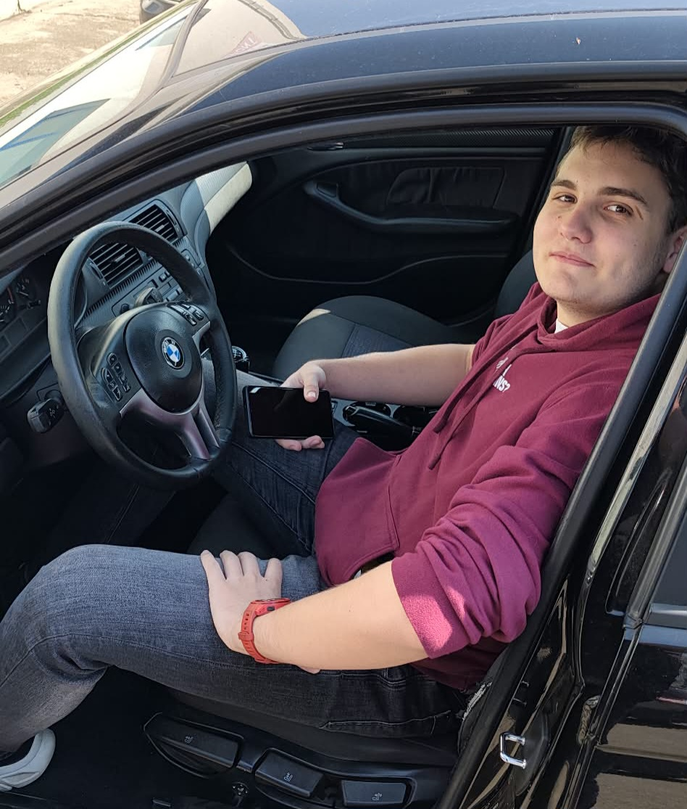

MCU, SBC és I²C Busz
SDA/SCL, hardver összehasonlítások
Projektek
AI Cheat Bot
Hamarosan elérhető modul...
Portfólió

Készítette: Balázs Krisztián
Tudni valók rólam:
Tudni valók rólam:
Tudni valók rólam:
Tudni valók rólam:
Tudni valók rólam:
Tudni valók rólam:
Tudni valók rólam: